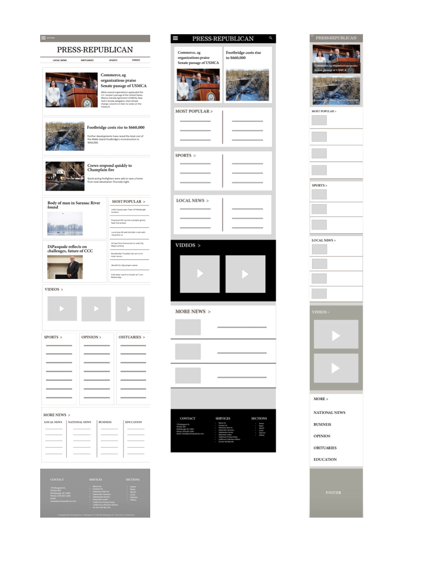

Press Republican: Website Redesign

I first studied the design and usability of the original website. I made notes of changes I wanted to incorporate for a more clean, visually pleasing interface.
Next I sketched up wireframes for a desktop, mobile, and tablet version of my new redesign.

I then narrowed down the layout of my wireframes, developed them on Sketch, and started adding content from the website to get a visual of the potential outcome. I played with different colors from the new palette I chose to see what worked best.

I imported my finished prototypes into Flinto to start the interaction design process. This is an example of my organization of my layers in Flinto.
A glimpse of my finished pages for desktop, tablet, and mobile versions of the redesigned website on Flinto after completing the desired amount of interactions.

Conducted 15 Heuristic Evaluations to compare the usability and design of the original website to the version that I redesigned.

Organized all of the results into one Excel sheet and created a radar chart to get an overview of the responses. I did my final tweaks of components of my page based on the results and until I was satisfied with the redesigns.